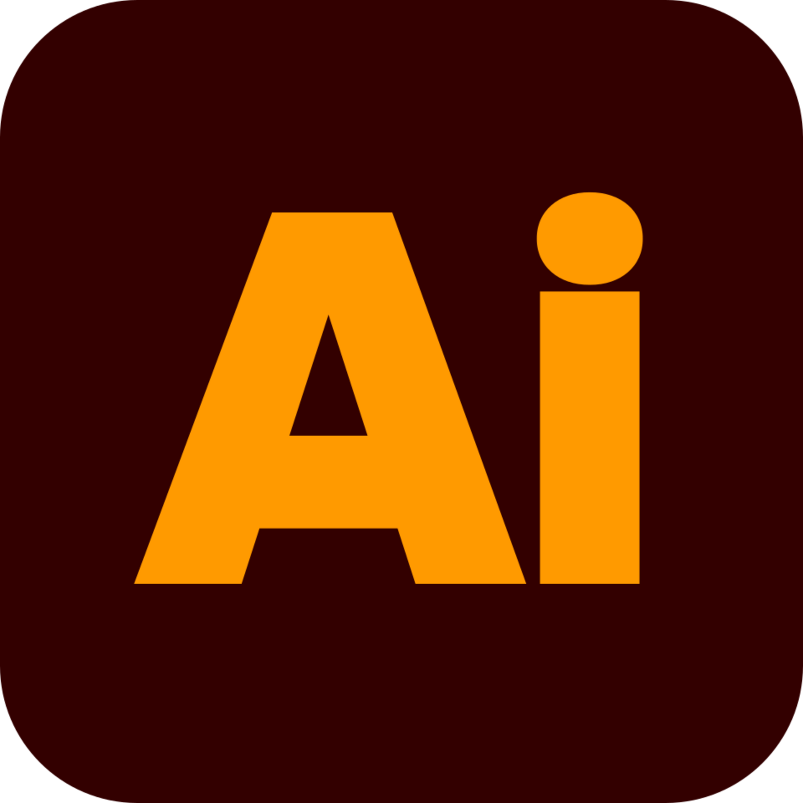
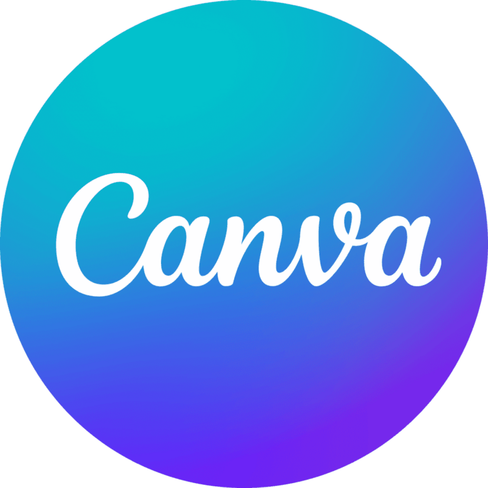

My Tech Stack
I build with intention, using tools that support clear visual communication, user-centered design, and interactive digital experiences.

Illustrator
Vector-based design for logos, graphics, and branding assets.
Photoshop
Photo editing, image manipulation, and visual composition for projects.
InDesign
Print layout, multipage documents, and visual storytelling for design systems.

Figma
Wireframing, UX flows, and interactive prototypes for web and mobile interfaces.
HTML / CSS
Front-end web development and responsive layouts for digital experiences.

Canva
Quick layout composition, presentation design, and visual communication.
Meta Ads
Designing and optimizing ad campaigns for digital products, analyzing performance, and testing UX impact.